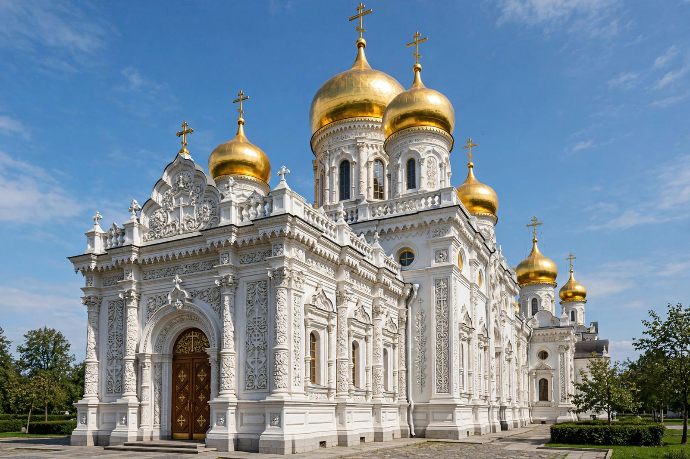

From Wikipedia, the free encyclopedia

| Eastern Orthodox Church | |
|---|---|
| Type | Christian communion |
| Adherents | About 220 million |
| Structure | Communion of autocephalous (self-governing) churches |
| First among equals | Ecumenical Patriarch of Constantinople |
| Separated | East–West Schism, 1054 |
The Eastern Orthodox Church, officially the Orthodox Catholic Church, is the second-largest Christian church, with approximately 220 million baptised members. It operates as a communion of autocephalous (self-headed) national churches — including the patriarchates of Constantinople, Alexandria, Antioch and Jerusalem and the churches of Russia, Greece, Serbia, Romania, Bulgaria and Georgia — each governed by its own synod of bishops while sharing the same faith, sacraments and canonical tradition. The Ecumenical Patriarch of Constantinople is honoured as "first among equals" but exercises no direct jurisdiction over the other churches.
Orthodoxy traces its continuity to the church of the Roman and Byzantine empires, shaped by the seven Ecumenical Councils of the first millennium. Growing theological and political estrangement from the Latin West — over the filioque clause in the Creed, papal supremacy, and cultural difference — culminated in the East–West Schism of 1054 and the sack of Constantinople by Crusaders in 1204. Under Ottoman rule the patriarchate administered Orthodox Christians through the millet system. Orthodoxy spread among the Slavs through the mission of Saints Cyril and Methodius, and the Russian Orthodox Church grew into the communion's largest member. In 2018 a dispute over Constantinople's recognition of an autocephalous Church of Ukraine led Moscow to break communion with Constantinople.
Orthodox theology rests on Scripture interpreted through Holy Tradition — the councils, the Church Fathers, and the liturgy. Salvation is understood as theosis, the transformation of the believer by divine grace. Worship centres on the Divine Liturgy, celebrated with icons, incense and chanting; icons are venerated as windows to heaven, a practice vindicated in the Triumph of Orthodoxy (843) after the iconoclastic controversies. Married men may be ordained priests, though bishops are chosen from monastics. Monasticism, from Mount Athos to the Russian startsy, remains spiritually central, and the church calendar is marked by long fasting seasons, above all Great Lent before Pascha (Easter).